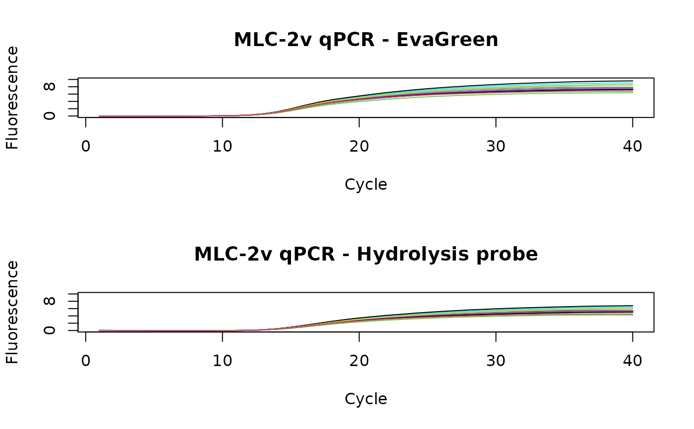

C127EGHP.RdQuantitative PCR (qPCR) with a hydrolysis probe (Cy5/BHQ2) and DNA binding dye (EvaGreen) (Mao et al. 2007) was performed in the Roche Light Cycler 1.5 thermo cycler. The cycle-dependent increase of the fluorescence was quantified at the annealing step.
data(C127EGHP)
A data frame with 40 observations on the following 66 variables. The first columns ("index") contains index of a sample and second column ("Cycle") contains the number of cycle. Consecutive columns EG1-EG32 contains fluorescence data for Eva Green dye. Consecutive columns HP1-HP32 contains data for hydrolysis probe.
MLC-2v was amplified in the Roche Light Cycler 1.5. The the change of fluorescence was simultaneously monitored for the Hydrolysis probe of MLC-2v and EvaGreen. The primer sequences for MLC-2v were taken from Roediger et al. (2013). A 10 micro L qPCR reaction was composed of 250 nM primer (forward and reverse), qPCR Mix (according to the manufactures recommendations), 1 micro L template (MLC-2v amplification product), 60 nM hydrolysis probe probe for MLC-2v. EvaGreen was used at 0.5 x final. During the amplification was monitored 59.5 degrees Celsius.
Claudia Deutschmann & Stefan Roediger, BTU Cottbus - Senftenberg, Senftenberg, Germany
A Highly Versatile Microscope Imaging Technology Platform for the Multiplex Real-Time Detection of Biomolecules and Autoimmune Antibodies. S. Roediger, P. Schierack, A. Boehm, J. Nitschke, I. Berger, U. Froemmel, C. Schmidt, M. Ruhland, I. Schimke, D. Roggenbuck, W. Lehmann and C. Schroeder. Advances in Biochemical Bioengineering/Biotechnology. 133:33--74, 2013.
Mao, F., Leung, W.-Y., Xin, X., 2007. Characterization of EvaGreen and the implication of its physicochemical properties for qPCR applications. BMC Biotechnol. 7, 76.
#> 'data.frame': 40 obs. of 66 variables: #> $ index: int 0 1 2 3 4 5 6 7 8 9 ... #> $ Cycle: int 1 2 3 4 5 6 7 8 9 10 ... #> $ EG1 : num 0.003662 0.005188 -0.000916 -0.000916 -0.000916 ... #> $ EG2 : num 0.00244 0.00549 -0.00061 -0.00214 -0.00061 ... #> $ EG3 : num 0 0.00458 -0.00153 0 -0.00153 ... #> $ EG4 : num 0.001221 0.004273 -0.000305 -0.000305 -0.001831 ... #> $ EG5 : num 0.00061 0.003662 -0.000916 -0.000916 -0.000916 ... #> $ EG6 : num -0.000916 0.003662 -0.000916 -0.002441 -0.000916 ... #> $ EG7 : num 0.001831 0.007935 0.000305 -0.001221 -0.002747 ... #> $ EG8 : num -0.00305 0.00305 0 -0.00153 -0.00153 ... #> $ EG9 : num -0.001831 0.004273 -0.000305 -0.001831 -0.001831 ... #> $ EG10 : num 0.001221 0.004273 -0.000305 -0.000305 -0.001831 ... #> $ EG11 : num -0.00671 0.00397 -0.00061 -0.00061 -0.00214 ... #> $ EG12 : num -0.001831 0.002747 -0.000305 -0.000305 -0.001831 ... #> $ EG13 : num -0.00214 0.00397 -0.00061 -0.00061 -0.00214 ... #> $ EG14 : num -0.004273 0.003357 0.000305 0.000305 -0.002747 ... #> $ EG15 : num -0.000305 0.004273 -0.000305 -0.001831 -0.001831 ... #> $ EG16 : num -0.00519 0.00244 -0.00061 -0.00061 -0.00214 ... #> $ EG17 : num -0.00366 0.00397 -0.00061 -0.00061 -0.00214 ... #> $ EG18 : num -0.010376 0.001831 -0.001221 0.000305 -0.001221 ... #> $ EG19 : num -0.003967 0.00061 0.00061 0.00061 -0.000916 ... #> $ EG20 : num -0.007324 0.000305 -0.001221 -0.001221 0.000305 ... #> $ EG21 : num -0.001831 0.004273 -0.000305 -0.001831 -0.001831 ... #> $ EG22 : num -0.009766 0.000916 -0.00061 -0.00061 -0.00061 ... #> $ EG23 : num -0.004883 0.002747 -0.001831 -0.000305 -0.001831 ... #> $ EG24 : num -0.00824 0.000916 -0.00061 -0.00061 -0.00061 ... #> $ EG25 : num -0.0061 0 -0.00153 0 0 ... #> $ EG26 : num -0.00763 0 -0.00153 0 0 ... #> $ EG27 : num -0.005493 0.00061 -0.000916 0.00061 -0.000916 ... #> $ EG28 : num -0.005493 0.002136 -0.000916 0.00061 -0.000916 ... #> $ EG29 : num -0.001831 0.004273 -0.000305 -0.000305 -0.001831 ... #> $ EG30 : num 0.00305 0.00458 0 -0.00153 -0.00153 ... #> $ EG31 : num -0.001221 0.001831 0.000305 -0.001221 -0.001221 ... #> $ EG32 : num 0.00244 0.00397 -0.00061 -0.00061 -0.00214 ... #> $ HP1 : num 0.027771 0.015564 0.000305 0.001831 -0.004273 ... #> $ HP2 : num 0.033265 0.028687 0.001221 -0.000305 -0.009461 ... #> $ HP3 : num 0.0296 0.02808 0.00519 -0.00244 -0.01007 ... #> $ HP4 : num 0.032349 0.02472 0.001831 0.000305 -0.00885 ... #> $ HP5 : num 0.02136 0.02289 0.00305 -0.00153 -0.00458 ... #> $ HP6 : num 0.017395 0.017395 0.00061 -0.000916 -0.007019 ... #> $ HP7 : num 0.04059 0.03601 0.0116 -0.00519 -0.01434 ... #> $ HP8 : num 0.01007 0.01465 -0.00061 -0.00061 -0.00671 ... #> $ HP9 : num 0.011597 0.016175 0.000916 -0.005188 -0.005188 ... #> $ HP10 : num 0.02838 0.02686 0.00244 -0.00366 -0.00671 ... #> $ HP11 : num -0.000305 0.019532 0.007324 -0.000305 -0.007935 ... #> $ HP12 : num 0.00885 0.018006 0.004273 -0.000305 -0.007935 ... #> $ HP13 : num 0.01465 0.02533 0.00244 -0.00061 -0.01129 ... #> $ HP14 : num 0.02991 0.03143 0.01312 0.00397 -0.02045 ... #> $ HP15 : num 0.022278 0.019226 0.000916 -0.002136 -0.00824 ... #> $ HP16 : num 0.00336 0.01862 0.00336 -0.00122 -0.00427 ... #> $ HP17 : num 0.02167 0.02472 0.00336 -0.00275 -0.00885 ... #> $ HP18 : num -0.007935 0.01648 0.001221 -0.000305 -0.004883 ... #> $ HP19 : num 0.00488 0.01251 0.00488 0.00336 -0.00427 ... #> $ HP20 : num -0.00519 0.0116 0.00244 -0.00366 -0.00366 ... #> $ HP21 : num 0.02655 0.02808 0.00519 -0.00397 -0.0116 ... #> $ HP22 : num -0.00458 0.01526 -0.00153 0 -0.0061 ... #> $ HP23 : num 0.05097 0.03571 0.00061 0.00366 -0.02075 ... #> $ HP24 : num 0.00763 0.01984 0.00153 0.00153 -0.01221 ... #> $ HP25 : num -0.00153 0.00916 -0.00305 -0.00153 0.00153 ... #> $ HP26 : num 0.00916 0.01984 0.00305 -0.00153 -0.00763 ... #> $ HP27 : num 0.014343 0.018921 0.00061 -0.000916 -0.007019 ... #> $ HP28 : num 0.01984 0.02441 0.00305 0.00153 -0.01068 ... #> $ HP29 : num 0.03418 0.0235 0.00519 -0.00244 -0.00702 ... #> $ HP30 : num 0.04883 0.02747 0.00305 -0.00153 -0.01068 ... #> $ HP31 : num 0.02502 0.02045 0.00519 -0.00244 -0.00855 ... #> $ HP32 : num 0.0293 0.01251 -0.00122 0.00183 -0.00732 ...data(C127EGHP) tmp <- C127EGHP par(mfrow = c(2,1)) plot(NA, NA, xlim = c(1,40), ylim = c(0,10), xlab = "Cycle", ylab = "Fluorescence", main = "MLC-2v qPCR - EvaGreen") for (i in 3:34) { points(tmp[, 2], tmp[, i], type = "l", col = i) } plot(NA, NA, xlim = c(1,40), ylim = c(0,10), xlab = "Cycle", ylab = "Fluorescence", main = "MLC-2v qPCR - Hydrolysis probe")